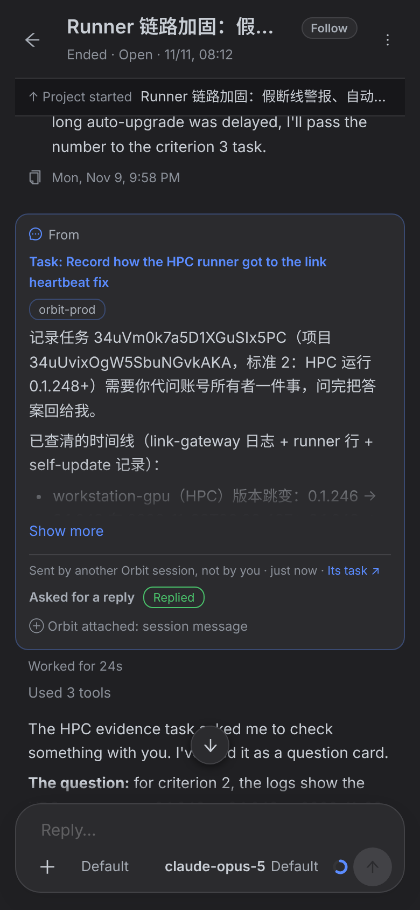
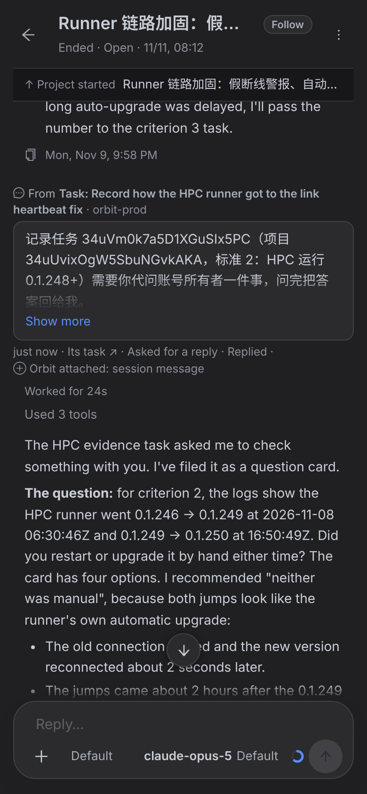

卡片宽 1359 px（整个对话栏），高 337 px。协调者的回复被挤到下面。
卡片 405 px，第一屏只剩它。

同一条消息：气泡贴合文字，最宽 720 px；高 169 px（含上下两行灰字）。下面紧接着就是协调者怎么处理的。
203 px，下面就是回复。手机屏比 720 px 窄，气泡占满对话栏。

上：现在（项目开工卡片，宽 1359 px） 下：改后（720 px，内容不变）。任务开工、例外项、确认审核同样处理。
| # | 现在 | 方案 |
|---|---|---|
| 1 | 蓝框卡片，宽度 100% | 不再是卡片 |
| 2 | 卡片头部：图标 + From + 蓝色加粗标题 + 带框的 agent 名 | 气泡上方一行 12 px 灰字：From Task: … · orbit-prod；标题仍可点，悬停变蓝；agent 名不加框 |
| 3 | 正文 8 行（超过 12 行才收） | 灰底细边气泡，贴合文字，最宽 720 px；正文 4 行（超过 6 行才收），渐隐 + Show more |
| 4 | 3 行：Sent by another Orbit session, not by you · 时间 · Its task / Asked for a reply + 绿框 Replied / ⊕ Orbit attached | 合成一行灰字：6m ago · Its task ↗ · Asked for a reply · Replied · ⊕ Orbit attached: session message；只有出问题的状态（No reply、Expired…）用琥珀色 |
| — | “Sent by another Orbit session, not by you” 常显 | 移到 From 那一行的悬停提示和读屏文字（左侧 + From 已经说明不是你） |
SessionMessageCard.tsx + index.css（原型 diff 见 capture/prototype.patch）、测试。SessionMessageCardView.swift，OrbitKit 的行数常量和 parity 测试。TranscriptRowView.kt，按 iOS 画。